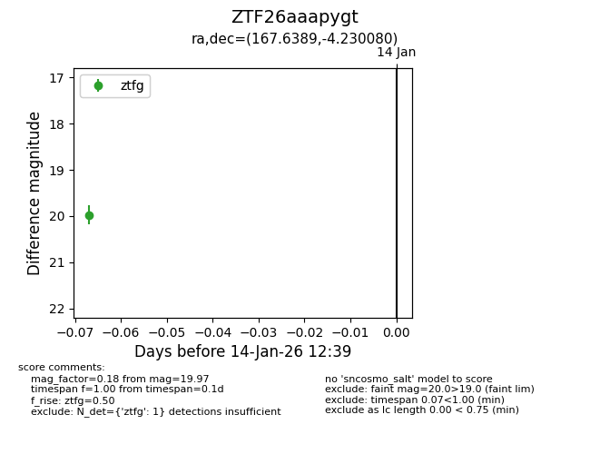
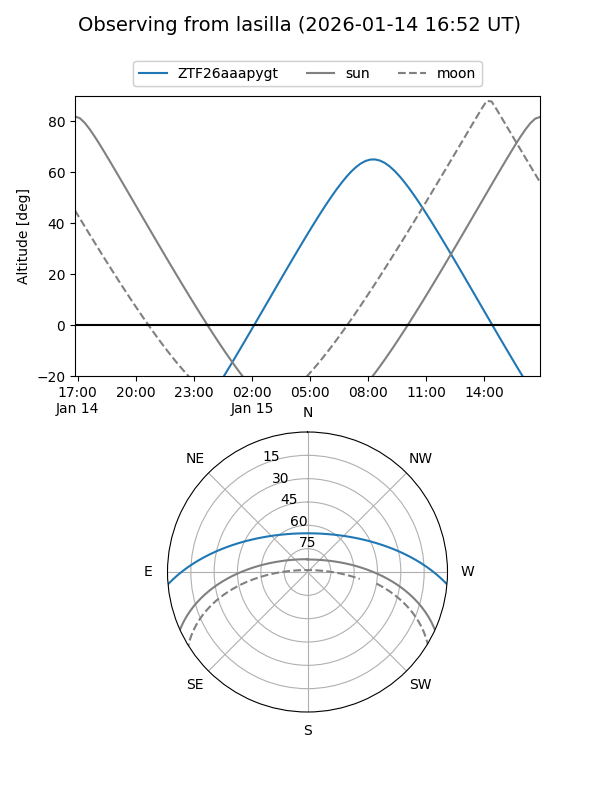
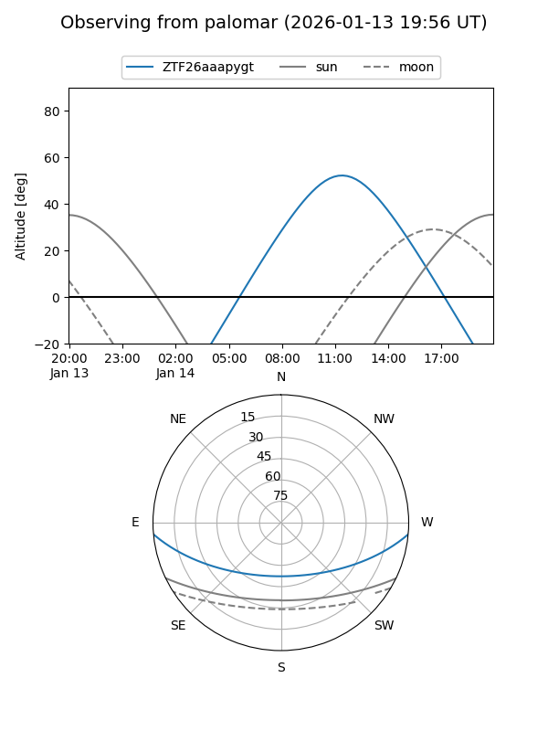

ZTF26aaapygt
Target ZTF26aaapygt at 2026-01-14 12:40
Aliases and brokers:
FINK: link
Lasair: link
ALeRCE: link
alt names
ZTF26aaapygt (ztf,fink_ztf)
Coordinates:
equatorial (ra, dec) = 167.6389,-4.23008
equatorial (HMS+DMS) = 11:10:33.34,-04:13:48.29
galactic (l, b) = (261.2376,+50.29302)
Flags:
Photometry:
last ztfg=19.97
1 ztfg detections
Lightcurve

Visibility


Additional plots